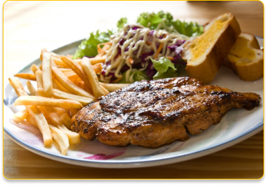
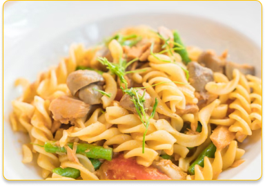

Recetas saladas

Lomo salteado
Descripción: El Lomo Salteado es un clásico de la cocina peruana que combina carne de res tierna con vegetales frescos, salteados a fuego alto. Este plato se sirve sobre papas fritas y arroz blanco, ofreciendo un equilibrio perfecto de sabores y texturas.

Pasta con champiñones
Descripción: La Pasta con Champiñones es un plato delicioso y reconfortante que combina pasta al dente con champiñones salteados en una cremosa salsa de ajo y parmesano. Es una opción perfecta para una comida rápida y sabrosa.